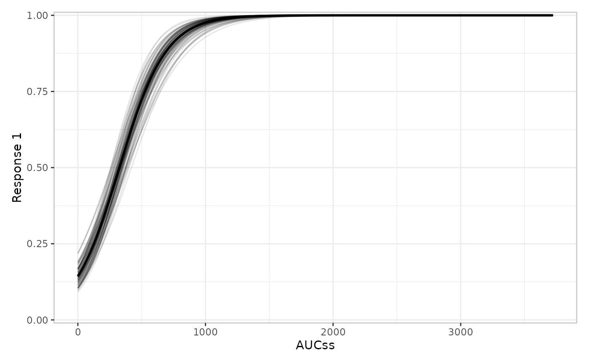
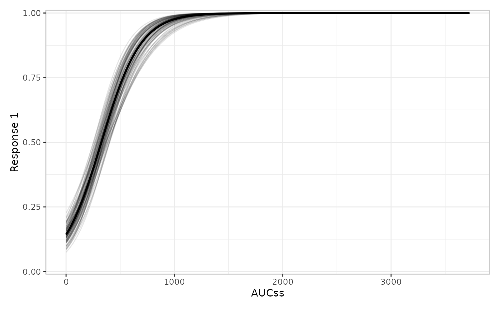
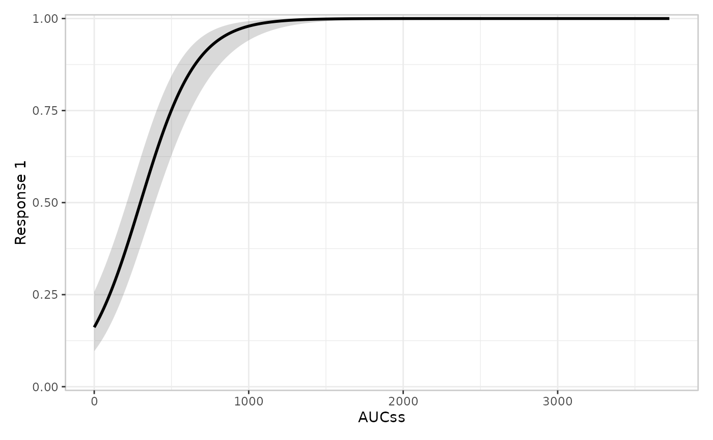

Adds the model layer: a fitted exposure-response curve with an uncertainty ribbon, or possibly a spaghetti plot of simulated draws.
Usage
er_plot_add_model(
object,
model,
keep_strata = NULL,
style = NULL,
conf_level = 0.95,
predict_args = list(),
...
)Arguments
- object
Partially constructed plot (has S3 class
er_plot).- model
A fitted exposure-response model. Must implement
er_predict().- keep_strata
Logical; whether this layer should use stratification.
- style
Function drawing the model curve/ribbon. Defaults to
er_style_model_ribbonline().- conf_level
Confidence level for the prediction ribbon.
- predict_args
A named list of additional arguments forwarded to
er_predict()(e.g. a model-specific argument itser_predict()method requires beyondmodel/newdata/conf_level). Distinct from...:predict_argsreacheser_predict(),...reachesstyle– see "Details".- ...
Additional named arguments forwarded unchanged to
styleat build time.
Details
This layer uses er_predict() to compute model predictions on the response scale. model may reference covariates beyond the exposure and strata variables. erplots fills any additional covariates from the plot data with a reference value (first factor level or numeric mean) when building the prediction grid. erplots does not check that model was fit on the same exposure/response as the plot; the caller must ensure compatibility.
predict_args and ... serve two different consumers and are kept
separate rather than sharing one ...: predict_args is spliced into
the er_predict() call (e.g. predict_args = list(landmark_time = 90) for a model whose er_predict() method needs a landmark_time
argument with no other slot in the fixed er_predict(model, newdata, conf_level) contract), while ... is forwarded to style alone
(see er_style()'s "Passing extra arguments to a builder" section).
Reusing a single ... for both would risk a silent name collision if
a style builder and a model's er_predict() method happened to share
an argument name for unrelated purposes.
Examples
if (requireNamespace("erglm", quietly = TRUE)) {
library(erglm)
mod <- erglm_model(ae1 ~ aucss, erglm_data, family = binomial())
erglm_data |>
er_plot(aucss, ae1) |>
er_plot_add_model(mod) |>
plot()
# a spaghetti plot instead of the default ribbon
erglm_data |>
er_plot(aucss, ae1) |>
er_plot_add_model(mod, style = er_style_model_spaghetti) |>
plot()
# plug in a fully custom model-curve builder
build_model_dashed <- function(data, config, stratify, exposure, response, strata, theme, ...) {
ggplot2::geom_line(
data = config$predictions,
mapping = ggplot2::aes(x = .data[[exposure$name]], y = fit_resp),
linetype = "dashed"
)
}
erglm_data |>
er_plot(aucss, ae1) |>
er_plot_add_model(mod, style = build_model_dashed) |>
plot()
# a model with a covariate beyond the exposure variable still works even when
# this layer isn't stratifying by it: `sex` is set to a reference value
# when building the prediction grid, which may not be what the user wants
mod_sex <- erglm_model(ae1 ~ aucss + sex, erglm_data, family = binomial())
erglm_data |>
er_plot(aucss, ae1) |>
er_plot_add_model(mod_sex) |>
plot()
}
 #> Using seed = 8689. Pass `seed = 8689` to reproduce this result.
#> Using seed = 8689. Pass `seed = 8689` to reproduce this result.


